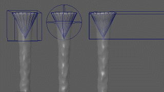
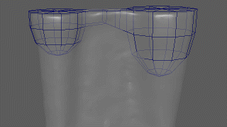

您可以在 Bifrost 模拟中设置启用和禁用流体发射器的动画，例如，显示正被关闭的水龙头。可能有多种方法适用，具体视情况而定。
立即启用或禁用发射器
- 在“属性编辑器”(Attribute Editor)中，选择 bifrostEmitterProps 节点并显示其 emitterProps 选项卡。
- 在“特性”(Properties)组中，确保“启用”(Enable)处于启用状态。
- 在“连续发射”(Continuous Emission)上设置关键帧，以便在特定帧启用和禁用发射。根据您的 Maya 版本，您可以通过在“属性编辑器”(Attribute Editor)中的“连续发射”(Continuous Emission)上单击鼠标右键直接执行该操作，或者您可能需要使用“通道盒”(Channel Box)。
通过缩放逐渐禁用发射器
如果将未渲染的简单网络用作发射器，则逐渐启用或禁用发射器的最简单方法是：设置其在一个或多个轴中缩放到 0 或从 0 缩放的动画。
使用边界逐渐启用或禁用发射器
您可以激活发射器的边界并为其设置动画，以便逐渐启用或禁用发射器。在特定情况下，这种方法非常有用，例如，在需要渲染发射器网格时，或者如果无法通过缩放发射器网格获得所需的结果。

- 在“属性编辑器”(Attribute Editor)中，选择 bifrostEmitterProps 节点并显示其 emitterProps 选项卡。
- 在“边界控制”(Boundary Controls)组中，启用“启用”(Enable)。
默认形状是一个长方体，边长为 2 并在视口中显示为线框。
- 根据需要选择其他“边界形状”(Boundary Shape)，然后缩放、旋转和平移 bifrostEmitterProps 节点，使其包含发射器的全部或部分几何体。
流体在边界与发射器几何体的相交处发射。
- 为 bifrostEmitterProps 节点的变换设置动画，以增加或减少相交体积。
使用厚度逐渐启用或禁用发射器
您可以为用于体素化发射器网格的厚度设置动画，以便逐渐启用或禁用发射。此方法可能会比其他方法更慢，但当发射器的形状不规则且其他方法无法获得所需的结果时，这会非常有用。

- 在“属性编辑器”(Attribute Editor)中，选择 bifrostEmitterProps 节点并显示其 emitterProps 选项卡。
- 在“转化”(Conversion)组中，为“厚度单位”(Thickness Units)选择一个值：
- “体素”(Voxels)使用“体素比例”(Voxel Scale) ד主体素大小”(Master Voxel Size)（在主要流体特性中设置）。
- 当“线性”(Linear)工作单位在“设置”(Settings)首选项中保留为默认值“厘米”(centimeter)时，“世界空间”(World Space)使用场景栅格单位。
- 为“厚度”(Thickness)属性设置动画，以控制发射粒子的体积。使用较小的值可收缩体积并发射更少粒子，而使用较大的值可扩展体积并发射更多粒子。若要完全禁用发射，请使用负值且幅值至少是发射器边界框的最小尺寸的一半。